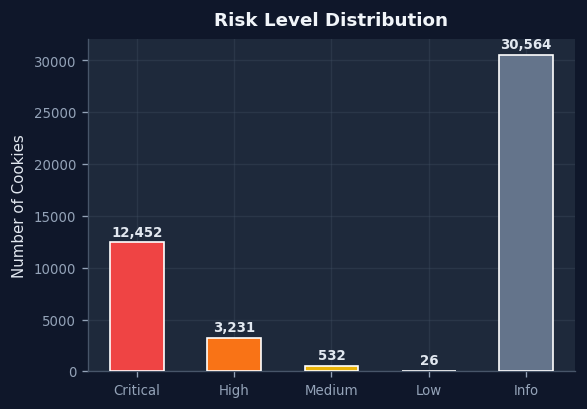
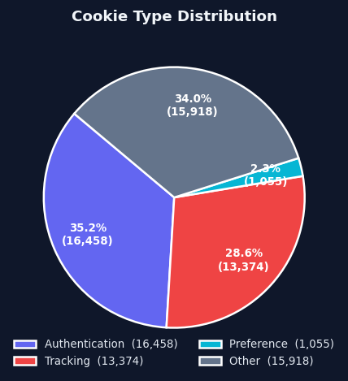
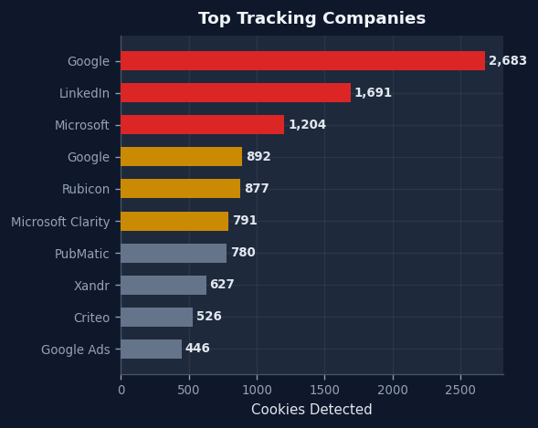

Executive Summary
This study analyzed 3,000 popular websites to assess cookie security practices and tracking prevalence. CookieGuard AI collected 46,805 cookies and classified them using on-device machine learning.
Key findings: 63.7% of sites deploy at least one high-risk authentication cookie vulnerable to session hijacking. Only 76.6% of authentication cookies use the Secure flag, and 24.8% use HttpOnly — leaving 23.4% and 75.2% exposed to interception and XSS attacks respectively.
Third-party tracking remains pervasive: 48.4% of sites embed trackers, connecting to an average of 2.3 tracking companies per site. Users browsing without protection are profiled across nearly every website they visit.
Analysis
Visual breakdown of cookie security practices across all analyzed websites.




Worst Offenders
Sites with the highest concentration of high-risk authentication cookies.
| Rank | Website | High-Risk Cookies | Tracker Companies |
|---|---|---|---|
| 1 | hilton.com | 174 | 63 |
| 2 | northwestern.edu | 141 | 39 |
| 3 | snaptik.app | 122 | 42 |
| 4 | librus.pl | 117 | 32 |
| 5 | epfindia.gov.in | 112 | 60 |
| 6 | gkdionis.ru | 110 | 32 |
| 7 | novinky.cz | 97 | 34 |
| 8 | 084kk.com | 92 | 29 |
| 9 | npr.org | 91 | 44 |
| 10 | transmissionapp.com | 89 | 36 |
Top Tracking Companies
Companies with the largest tracking footprint (48.4% of sites have trackers, averaging 2.3 companies per site).
| Rank | Company | Cookie Count |
|---|---|---|
| 1 | Google Analytics | 2,683 |
| 2 | 1,691 | |
| 3 | Microsoft | 1,204 |
| 4 | 892 | |
| 5 | Rubicon | 877 |
| 6 | Microsoft Clarity | 791 |
| 7 | PubMatic | 780 |
| 8 | Xandr | 627 |
| 9 | Criteo | 526 |
| 10 | Google Ads | 446 |
Methodology
Each website was visited once using headless Chromium via Playwright. Cookies were collected and classified using CookieGuard AI's on-device classifier. No user accounts were accessed and no cookie values were stored during the analysis.